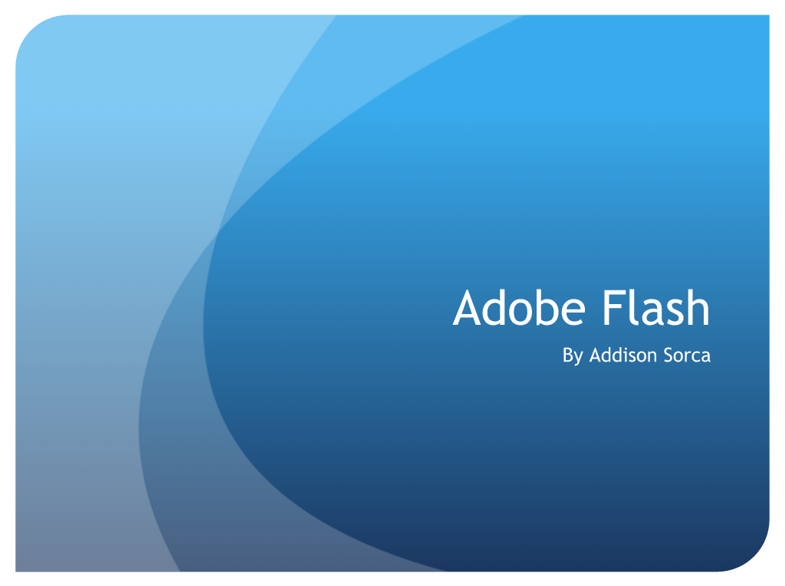

Self-Portrait
Winter 2014
Presentational Skills
Explanation
We had to put together a presentation in Business Software Applications about a tool that we use in our program area in order to show that we could use the computer program PowerPoint. We were also only allowed to use five words on each slide, to show that we weren't supposed to simply read off the slides when presenting a PowerPoint. We were given a day to research and put together, and another day to present.
Reflection
I believe that I did good on the PowerPoint itself. I was able to put together a slideshow using the program and successfully give a lot of information using very few words. Although I went over the time limit we were given, I was able to show that I knew how to use Microsoft PowerPoint to put together a presentation and present without simply reading off the projector.